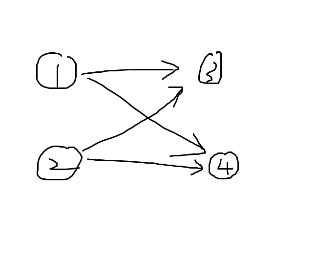

Petrozavodsk Winter 2017 Day 1 赛后小结
|字数总计:2.7k|阅读时长:11分钟|阅读量:
比赛链接：https://qoj.ac/contest/1362
队长怎么这么喜欢赤石，找这种场。
队友秒了 I ，我秒了 L 。
队长秒了 B ，队长一开始声称了一个 $m^2*26$ 的做法，后面队长发现短序列不用子序列自动机，直接推就是 $O(m^2)$ 的，我去写，过了。
队长上机连过 F,A 。
队友跟我说了他们 K 的做法，直接把相同长度的放一起处理，然后把原串的这个长度的子串扔进 Hash map 里，时间复杂度：$O(L(\sqrt{L}+26))$ ，我觉得很对啊，而且模糊匹配一个字符怎么可能有低于根号的做法，我就直接上了。
第一发 WA ，此时时间一小时。
然后我开始写对拍，半个小时后写完对拍开拍（ Py 不熟练是这样子的）。
期间队友搞出了 C 。
后面发现是因为爆 long long 了，具体来说，正确写法是：(__int128_t)x*y ，而我写成了：(__int128_t)(x*y) ，不熟练运算优先级导致的。
后 T 了，最快结束的时候卡常卡过去了，赛后才知道正解是 log 的，错怪出题人了。
卡常手法包括：手动写 Hash map ，根据插入元素的个数决定清空方式（最后加了这个，卡过去了），等等一系列比较小的细节。
总之，在两个小时换了 Hash map T 了后，就暂时先放弃了此题。
在队长卡常的时候，我和队友聊了 J ，感觉是把前缀建个节点，后缀建个节点，连成二分图，找一个类似四元环的东西，但因为是二分图，所以可以直接认为就是找四元环，但是是根号的，我觉得过不了。
后面队友上去写 H ，和队长聊 D ，队长一语道破天机，只有 $64^3*2$ 种状态，所以转移就行了，但是我觉得太难写了，写不出来，遂去思考怎么写 J 。
队友接近三小时的时候过 H 了，询问队友怎么找四元环，以及为啥复杂度是对的，期间队友因为我执着于为啥复杂度是根号的固执和愚蠢怒发冲冠，在队友的耐心轰入下终于明白为啥是根号，赞成队友说的这是特殊图，跑不满的观点，开写。
这里我问复杂度这个行为对不对呢？如果真是重大比赛，其实只需要问队友这个复杂度是不是不是严格的，特殊图是不是不会跑满这个问题，得到肯定答复后直接把做法当黑盒用就可以开写了，不能浪费机时，也不能浪费思考时间，但是不是的话问一下还是可以的。
三个小时过去了，收获第一发 WA ，半个小时后发现原来是某个地方点数搞错了，改了过了。
具体来说，我一开始以为点数是 $n+n$ ，在一次调试后发现点数应该是总长乘 $2$ ，改了，但只改了一部分。
所以建议以后这种基本变量的更改得用 Ctrl F 把所有这种地方全改了，防止遗漏，还是习惯不好导致的。
期间队长上 D ，我和队友讨论，Imakf 突然发现 G 其实就是个循环卷积，但因为我对这题并不熟悉，而且系数之类的也没想明白，我并不愿意上机此题，最后和队友决定，我把多项式部分抄了，队友在机下想好系数再上。
不得不说尚菲杨的多项式板子真好用啊，最后抄完发现错了，后来发现是快速幂写错了，唐完了。
最后 Imakf 上机，在 04:18:05 收获第一发 WA ，下机，我突然发现 $nm^2$ 爆 998244353 了，所以换了个模数接着上，结果还是 WA ，我们突然意识到这发草率了（虽然但是，我感觉最后一个小时的送怎么样都不算唐，除非有罚时跟着很紧的情况，否则过了血赚，不过 20 罚时罢了），因为系数是近似随机的，所以超过 998244353 还是有难度的。
最后发现是 Imakf 最后没取模，唐完了，四个半小时过了。
最后队长激情写 D ，最后十分钟写完，但拼尽全力也无法在比赛结束前调试出来。
部分题解：
L
显然从大到小，否则交换更优。
B
设 $f[x][y]$ 表示短序列前 $x$ 和匹配了 $y$ 个在长序列中的最小的位置是多少。
时间复杂度：$O(26n+m^2)$
1
2
3
4
5
6
7
8
9
10
11
12
13
14
15
16
17
18
19
20
21
22
23
24
25
26
27
28
29
30
31
32
33
34
35
36
37
38
39
40
41
42
43
44
45
46
47
| #include<bits/stdc++.h>
using namespace std;
const int N = 1e6 + 5;
const int M = 1e3 + 5;
void get_char_array(char *s){
static char st[N];
cin >> st;
memcpy(s + 1, st, sizeof(char) * (strlen(st) + 1));
}
int nxt[N][26], las[26];
char s1[N], s2[N];
int n, m;
int dp[M][M];
int main(){
int T;
cin >> T;
while(T--){
get_char_array(s1);
get_char_array(s2);
n = strlen(s1 + 1);
m = strlen(s2 + 1);
for(int i = 0; i < 26; i++) las[i] = n + 1;
for(int i = n; i >= 1; i--){
for(int j = 0; j < 26; j++) nxt[i][j] = las[j];
las[s1[i] - 'a'] = i;
}
for(int i = 0; i < 26; i++) nxt[0][i] = las[i];
for(int i = 0; i <= m; i++){
for(int j = 0; j <= m; j++) dp[i][j] = n + 1;
}
dp[0][0] = 0;
for(int i = 1; i <= m; i++){
for(int j = 0; j <= m; j++){
dp[i][j] = min(dp[i][j], dp[i - 1][j]);
if(j && dp[i - 1][j - 1] != n + 1) dp[i][j] = min(dp[i][j], nxt[dp[i - 1][j - 1]][s2[i] - 'a']);
}
}
for(int i = m; i >= 0; i--){
if(dp[m][i] != n + 1){
cout << i << "\n";
break;
}
}
}
return 0;
}
|
K
我们的做法：
根据长度将询问串分组，把主串的子串丢进 Hash map 中，然后询问串一个个改，一个个问。
时间复杂度：$O(L(\sqrt{L}+26))$ 。
C
不妨把同编号的点看成一个区域，然后 $(x,y)$ 的格子看成是 $x,y$ 区域的连边，则这是个 $n$ 个点的平面完全图，所以 $n>5$ 时无解，玩出小范围就行了。
J
前缀当成点，后缀当成点，连边，则等价于找这样的结构：

注意到这是二分图，等价于找四元环。
四元环怎么找，按照深度从大到小排序，给每条边定向。
每次搜索每个点，然后遍历其出边，这里要求只到排名大于他的点，再遍历出边的出边打标记，遇到已经打过标记的点就返回结果，找到了个四元环，这样的时间复杂度是多少呢？
度数 $d\le \sqrt{m}$ 的点至多被找 $\sqrt{m}$ 次，所以贡献为：$d*\sqrt{m}$ ，所以总共不超过 $m\sqrt{m}$ 次。
$d>\sqrt{m}$ ，则能到达其的点至多 $\frac{m}{d}$ 次，所以其的贡献为 $m$ ，这样的点至多 $\sqrt{m}$ 个，所以贡献不超过 $O(m\sqrt{m})$ 。
所以总时间复杂度是 $O(m\sqrt{m})$ 的。
这是个特殊的图，所以跑的不慢。
1
2
3
4
5
6
7
8
9
10
11
12
13
14
15
16
17
18
19
20
21
22
23
24
25
26
27
28
29
30
31
32
33
34
35
36
37
38
39
40
41
42
43
44
45
46
47
48
49
50
51
52
53
54
55
56
57
58
59
60
61
62
63
64
65
66
67
68
69
70
71
72
73
74
75
76
77
78
79
80
81
82
83
84
85
86
87
88
89
90
91
92
93
94
95
96
97
98
99
100
101
102
103
104
105
106
107
108
109
110
111
112
| #include<bits/stdc++.h>
using namespace std;
typedef __int128_t IT;
typedef long long LL;
typedef pair<int, int> PII;
const LL mod = 991234123412334719, B = 323;
const int N = 5e5 + 5;
const int NN = N * 2;
int n, zlen;
string s[N];
vector<LL> hl[N], hr[N];
map<LL, int> id[2];
int icnt[2];
struct node{
int y, next;
int id;
}a[NN]; int len, las[NN], du[NN];
void ins_(int x, int y, int c){a[++len] = {y, las[x], c}; las[x] = len;}
void ins(int x, int y, int c){
ins_(x, y, c);
ins_(y, x, c);
du[x]++;
du[y]++;
}
int getid(LL x, int t){
auto tmp = id[t].find(x);
if(tmp == id[t].end()){
id[t][x] = ++icnt[t];
return icnt[t];
}
else return (*tmp).second;
}
int ord[NN], rk[NN], pre1[NN], pre2[NN], pre3[NN];
vector<int> ans;
bool getans(){
for(int i = 1; i <= icnt[1]; i++){
int x = ord[i];
for(int k1 = las[x]; k1; k1 = a[k1].next){
int y = a[k1].y;
if(rk[y] < rk[x]) continue;
for(int k2 = las[y]; k2; k2 = a[k2].next){
int z = a[k2].y;
if(z == x || pre3[z] == y) continue;
if(pre1[z]){
ans = {pre1[z], pre2[z], a[k2].id, a[k1].id};
if(x > zlen) rotate(ans.begin(), ans.begin() + 1, ans.end());
return 1;
}
pre1[z] = a[k1].id;
pre2[z] = a[k2].id;
pre3[z] = y;
}
}
for(int k1 = las[x]; k1; k1 = a[k1].next){
int y = a[k1].y;
if(rk[y] < rk[x]) continue;
for(int k2 = las[y]; k2; k2 = a[k2].next){
int z = a[k2].y;
pre1[z] = pre2[z] = pre3[z] = 0;
}
}
}
return 0;
}
int main(){
int T;
cin >> T;
while(T--){
icnt[0] = icnt[1] = 0;
cin >> n;
for(int i = 1; i <= n; i++){
cin >> s[i];
icnt[1] += s[i].length();
}
zlen = icnt[1];
for(int i = 1; i <= n; i++){
hl[i].resize(s[i].length() + 1);
hr[i].resize(s[i].length() + 1);
for(int j = 1; j <= s[i].length(); j++) hl[i][j] = ((IT) hl[i][j - 1] * B + s[i][j - 1]) % mod;
for(int j = s[i].length() - 1; j >= 0; j--) hr[i][j] = ((IT) hr[i][j + 1] * B + s[i][j]) % mod;
for(int j = 1; j < s[i].length(); j++){
int l = getid(hl[i][j], 0);
int r = getid(hr[i][j], 1);
ins(l, r, i);
}
}
for(int i = 1; i <= icnt[1]; i++) ord[i] = i;
sort(ord + 1, ord + icnt[1] + 1, [](int x, int y){return du[x] > du[y];});
for(int i = 1; i <= icnt[1]; i++) rk[ord[i]] = i;
ans.clear();
if(!getans()) cout << "NO\n";
else{
cout << "YES\n";
cout << s[ans[0]] << " " << s[ans[2]] << "\n";
cout << s[ans[1]] << " " << s[ans[3]] << "\n";
}
ans.clear();
for(int i = 1; i <= n; i++){
hl[i].clear();
hr[i].clear();
}
for(int t = 0; t <= 1; t++){
map<LL, int> tmp;
swap(tmp, id[t]);
}
len = 0;
for(int i = 1; i <= icnt[1]; i++) las[i] = du[i] = pre1[i] = pre2[i] = pre3[i] = 0;
}
return 0;
}
|
G
注意到贡献是个类似循环卷积的东西，即：$(2x-1)^{n}$ ，其中系数 $\mod m$ ，关于 $x^{n}$ 循环。
其中 $x$ 表示 $i+x$ 的贡献系数。
由于循环卷积可以看成先不循环，算完结果以后再循环算一下结果，则根据卷积的结合律可以得到循环卷积也有结合律，所以可以快速幂。
时间复杂度：$O(n\log{n}\log{t})$ 。
D
注意到状态不超过 $64^3*2$ ，同时可以注意到一个性质，任何一种先手状态都存在将死局面，这个时候怎么转移都行了。
队长写了度数转移。
后面队长声称没看到题面写的答案写的 50 步以内，所以可以直接迭代 50 步，会更加好写。
但我感觉无论怎样，这道题目都很难写，史味浓浓啊。